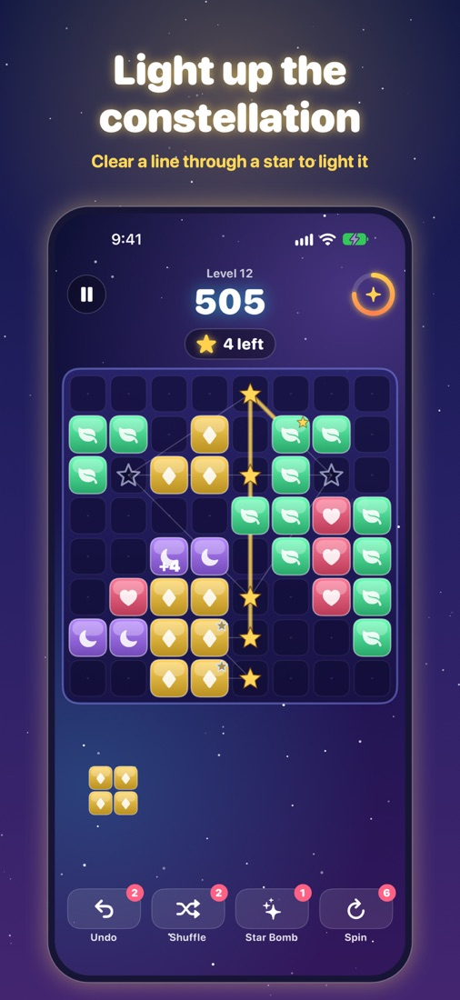
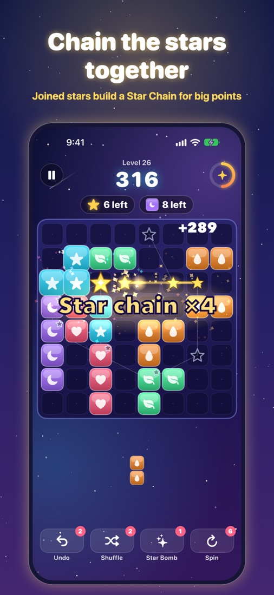
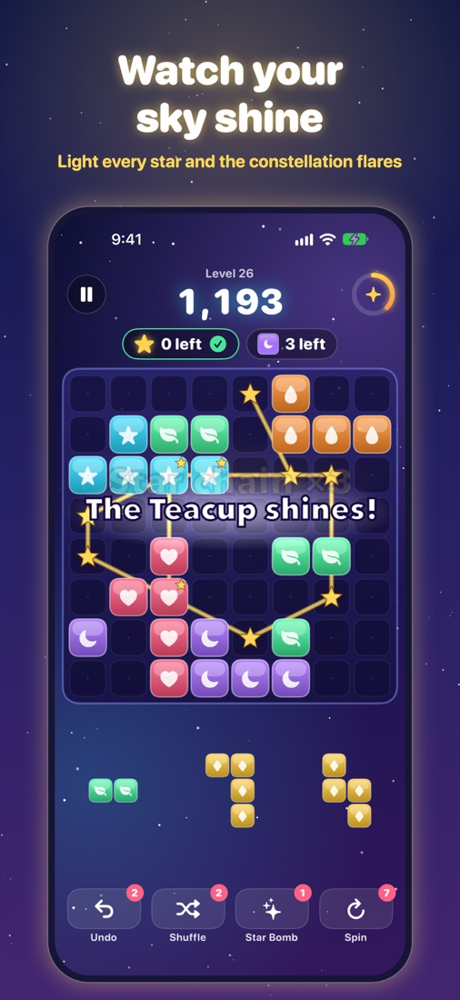
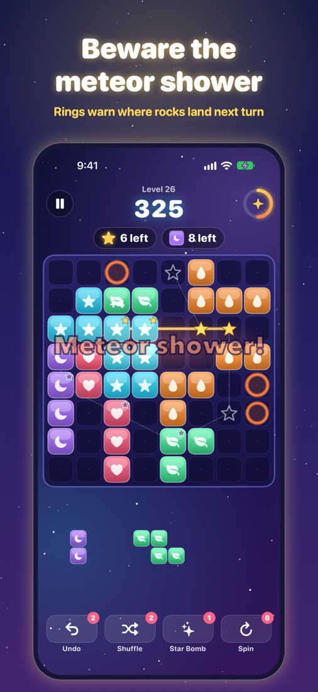
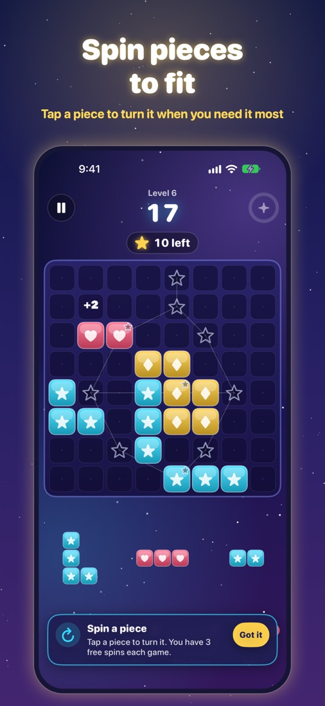
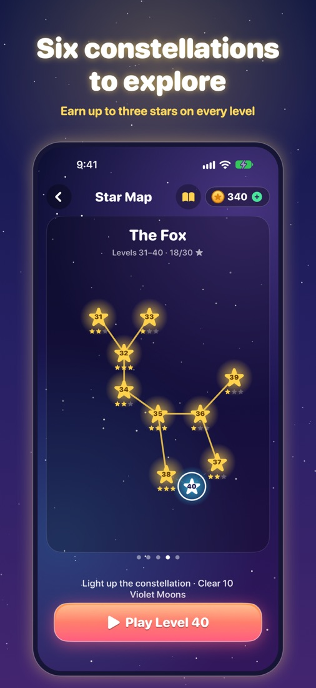
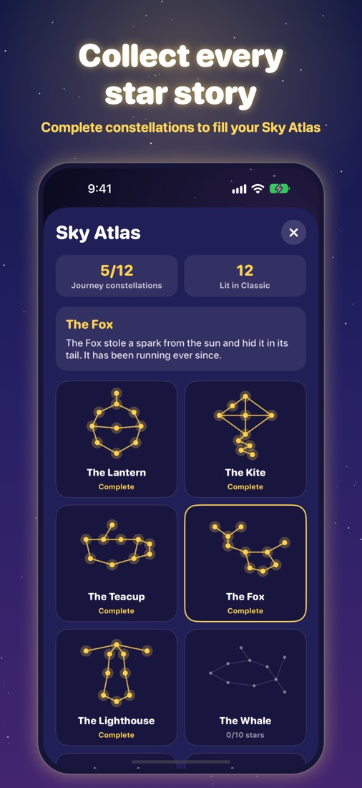
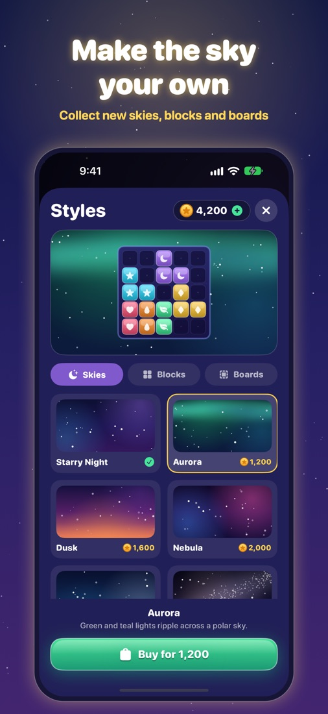

Drag glowing star-blocks onto the night sky. Fill a row or column and it bursts into light, and every board hides a constellation waiting to be lit.
Free on iPhone. No timers: play at your own pace.








Place pieces, fill lines, clear the board. Then the stars come out.
A constellation is drawn across the board. Clear a line through a star's square and it lights up gold. Light them all and the whole constellation flares.
Light a star joined to the last one you lit and your Star Chain grows. Longer chains score more and charge your Comet.
Glowing rings warn where rocks will land next turn. Cover those squares first, or let them fall and clear the rocks for bonus points.
Tap a piece to turn it a quarter turn. Three free spins each game, and one more for every constellation you complete.
Every clear charges the Comet. When it's ready, drop it on any square to clear its whole row and column.
Clear a line all of one colour for a Supernova worth double.
Light stars, free crystals and collect colours to earn up to three stars a level, and finish each constellation to unlock its story in your Sky Atlas.
Chase your best score. Each constellation you complete pays a bonus, and the next one rises.
Spend your coins on new looks: skies from rippling auroras to the Milky Way, blocks from cut gems to tiny ringed planets, and boards of brass, driftwood and ice.
Buy stars with your coins, place them, join them with lines and give your constellation a name. Then watch it rise in Classic.
All of them original, drawn for the game: 120 levels before any repeat, with more in every update. Finish one in Journey and its story joins your Sky Atlas.
Every colour has its own symbol (star, moon, heart, gem, leaf, drop), so you never need to tell colours apart.
Think as long as you like. A short walkthrough shows you the basics, and tips appear the first time you meet something new.
No account and no sign-in. Your progress stays on your phone.
Any iPhone with iOS 17 or later.
Yes. The game is free to play, with ads. Optional in-app purchases include a one-time Remove Ads and packs of coins, which you can spend on boosters, styles and stars for your own constellation. Every coin can also be earned by playing.
Yes. Every mode plays without a connection.
See the privacy policy.
Open Settings in the game and tap Restore Purchases.